Sample from the prior distribution of pibblefit object
Source:R/fidofit_methods.R
sample_prior.pibblefit.RdNote this can be used to sample from prior and then predict can
be called to get counts or LambdaX (predict.pibblefit)
Usage
# S3 method for pibblefit
sample_prior(
m,
n_samples = 2000L,
pars = c("Eta", "Lambda", "Sigma"),
use_names = TRUE,
...
)Arguments
- m
object of class pibblefit
- n_samples
number of samples to produce
- pars
parameters to sample
- use_names
should names be used if available
- ...
currently ignored
Details
Could be greatly speed up in the future if needed by sampling directly from cholesky form of inverse wishart (currently implemented as header in this library - see MatDist.h).
Examples
# Sample prior of already fitted pibblefit object
sim <- pibble_sim()
attach(sim)
#> The following object is masked from package:fido:
#>
#> Y
fit <- pibble(Y, X)
head(sample_prior(fit))
#> $D
#> [1] 10
#>
#> $N
#> [1] 30
#>
#> $Q
#> [1] 2
#>
#> $iter
#> [1] 2000
#>
#> $coord_system
#> [1] "alr"
#>
#> $alr_base
#> [1] 10
#>
# Sample prior as part of model fitting
m <- pibblefit(N=as.integer(sim$N), D=as.integer(sim$D), Q=as.integer(sim$Q),
iter=2000L, upsilon=upsilon,
Xi=Xi, Gamma=Gamma, Theta=Theta, X=X,
coord_system="alr", alr_base=D)
m <- sample_prior(m)
plot(m) # plot prior distribution (defaults to parameter Lambda)
#> Scale for colour is already present.
#> Adding another scale for colour, which will replace the existing scale.
